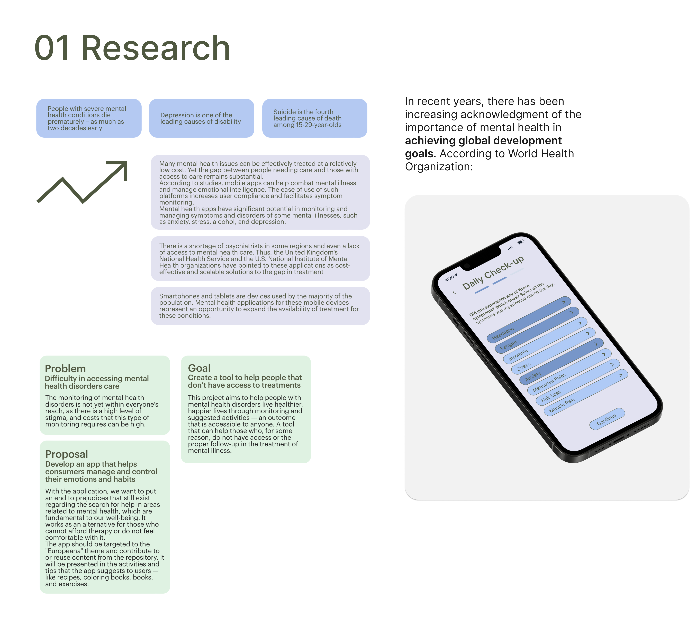
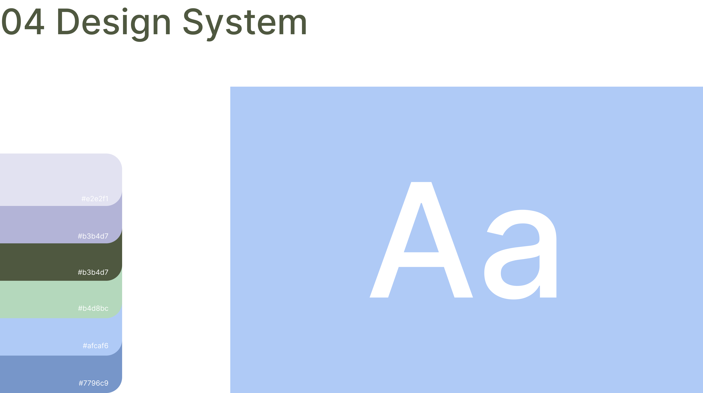
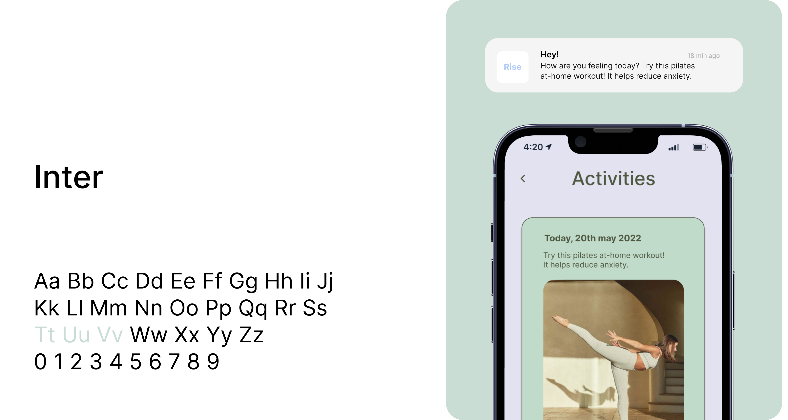

The Process
1. Research
2. Synthesis
3. Ideation
4. Design
We started by having a brainstorming session to explore problems for our project. Each team member wrote down words that came to mind on a Post-It note. We repeated the process several times, resulting in a few ideas. After, we observed some similarities between the generated ideas and decided to group them by themes.
Within the themes we got, we chose to move forward with health. Since it is a theme we had never worked on before, we thought it would be a good challenge to develop our research and design thinking skills. Within the various areas of health, we decided to follow with mental health.
1. Research
In recent years, there has been increasing acknowledgment of the importance of mental health in achieving global development goals. According to World Health Organization:

After research it became clear what the problem to work on was and, consequently, its goal.
Define
We proceeded to define our problem, goals and make a proposal.

2. Synthesis
Here we started generating ideas - such as functionalities, users and stakeholders, and user flow.

User experience goals
Stakeholders and Users
Storyboard
To better understand the user's context, we created a possible scenario and a storyboard to map out the intended experience and visualize key touch points.

3. Ideation
Wireframes
Then we proceeded to create an initial version of the app screens. During this process, we discussed ideas and alternatives — we listed the tasks for the user and created a navigation system between screens.

User flow
After we created user flows and wireframes to capture the application's tasks.
Tests
Once we had drawn our wireframes, we tested them. We made a cognitive walkthrough for our main functionality and sent it to 4 other groups to gather feedback on what we might improve before making high-fidelity prototypes.

We conclude that the Daily Check-up achieves its purpose and is understandable and
intuitive.
Although we consider the component error-free, we have added the daily input of all habits the
user wants to control. We also made other changes and added some elements, according to the comments we
received in the walkthrough, and we agreed to improve to provide a better product and experience.
4. Design


Conclusion
I am happy with the product we have made. I think that we successfully created an app that makes mental health monitoring more accessible. After the user testing, we are confident that Rise would be a satisfying experience for users.